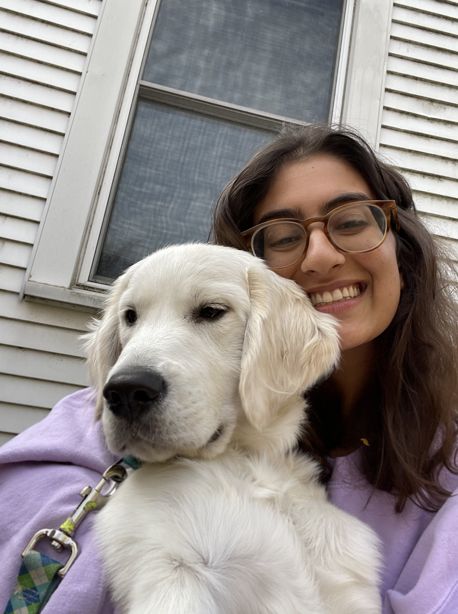

About Me
My name is Sophie Furlow. I am a senior at Northwestern University studying Biomedical Computation in the McCormick School of Engineering and Applied Science. I designed this major myself through McCormick Integrated Engineering Studies, and my coursework is in applied math and statistics, computer science, and biology. After graduation, I plan to complete a Master's degree in computational science or bioengineering.
My research interests are in computational genomics, machine learning for biological systems, and quantitative approaches to proteomics for development of therapeutics. I have completed undergrad research through the NSF-Simons Center for Quantitative Biology and Northwestern's Science of Networks in Communities (SONIC) lab. I hope to pursue a career in biotechnology where I can use my computational toolkit for the development of diagnostics and therapeutics that improve patient care.
Other Interests
I love dogs and enjoy skiing, swimming, and hiking. I spend a lot of my free time with family and friends or walking on the lakefill.
I also love art. I've always loved to draw and spend my freetime exploring new media. Art is a therapeutic escape that helps me unwind while exercising my creative muscles. Art is mostly a hobby, but I have taken a few intro art courses for practice. I constantly take inspiration from Pinterest, classes, friends, Instagram, and the world around me. Scroll to take a look at @braindumpbysoph on Instagram to see some of my work for fun.
